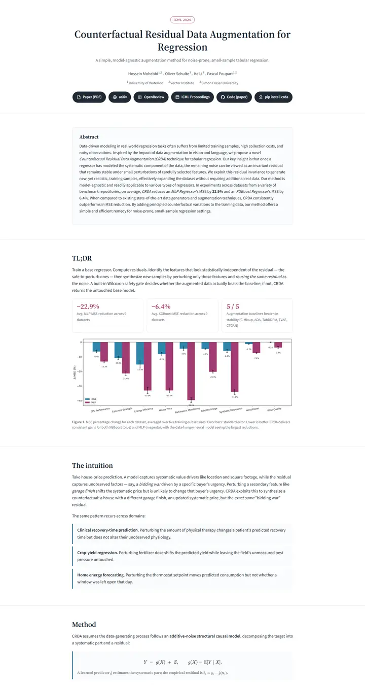

Counterfactual Residual Data Augmentation for Regression
丁寧に使われた実験ノート。セリフ体の見出し、罫線入りのページ、表紙にはラズベリー色のタブ、余白にはティールの書き込み。

表示されたページと照合済みです。
選んだ理由
控えめでアカデミックなセリフ体のスタイルに、ピル型の会議名タグ、暗いボタン列、枠で囲んだアブストラクト、グラフの色と揃えたマゼンタの数値カード、引用バー付きのコールアウトを組み合わせています。洗練されていて読みやすく、セクションのリズムも明快です。
以下の説明と DESIGN.md 本文は英語です。コーディングエージェントが同じ一つの版を読めるよう、翻訳していません。
概要
カラーパレット
タイポグラフィ
Source Serif 4
Counterfactual Residual Data Augmentation for Regression
Abstract · Method · Results · BibTeX — 0123456789
Source Sans 3
Counterfactual Residual Data Augmentation for Regression
Abstract · Method · Results · BibTeX — 0123456789
JetBrains Mono
Counterfactual Residual Data Augmentation for Regression
Abstract · Method · Results · BibTeX — 0123456789
余白と形
ページの構成要素
ガイドライン
似たスタイル

CRAFT: Training-Free Cascaded Retrieval for Tabular QA
淡い青焼きブルーの整った製品マニュアル。どの段階もそれぞれの色の縁をまとっている。

Efficient Self-Evaluation for Diffusion Language Models via Sequence Regeneration
青、すみれ、アプリコットの夜明け色に染まった角丸カードの整った積み重ね。署名はグラデーションのワードマーク。

FIGMA: Towards FIne-Grained Music retrievAl
温かみのある紙に刷った音楽誌。赤いキッカーの下に重厚な Newsreader の見出し、結果を示す大きな赤いセリフ数字、柔らかなクリーム色の枠に収まった図。

GuideDog: A Real-World Egocentric Multimodal Dataset for Blind and Low-Vision Accessibility-Aware Guidance
静かな学術書の一頁。セリフ体の一段組み、リンクには牛血色のインク、自分の行だけをほんのり染める表。

LaMI: Augmenting Large Language Models via Late Multi-Image Fusion
丁寧に作られた学会配布資料。Noto Serif の見出し、ネイビーの枠線ボタン、交互に現れる柔らかなグレーの帯。

PairCoder++: Pair Programming as a Universal Paradigm for Verified Code-Driven Multimodal and Structured-Artifact Generation
すっきりとした白い製品ページ。青いお知らせの帯、墨のように黒いピル型ボタン、柔らかな影のカードに載ったすべての図。